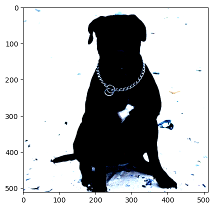
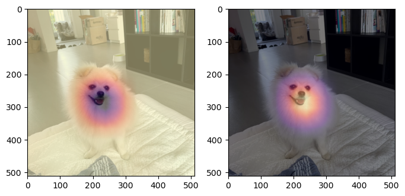
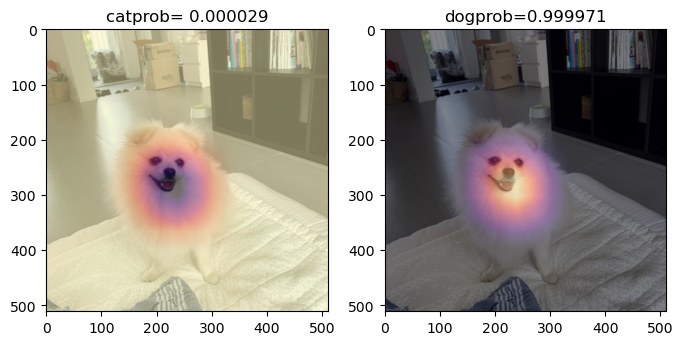
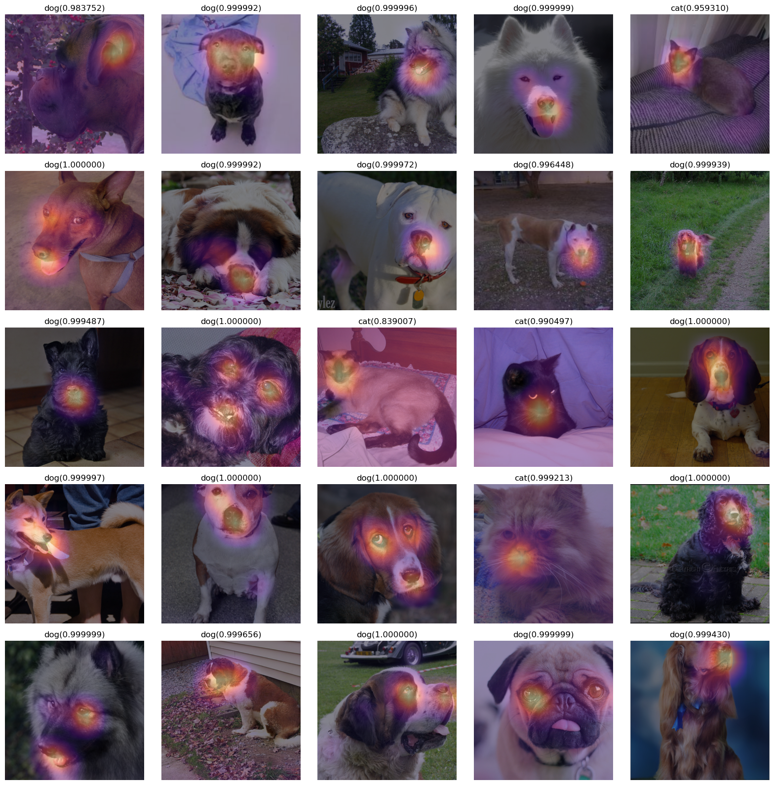
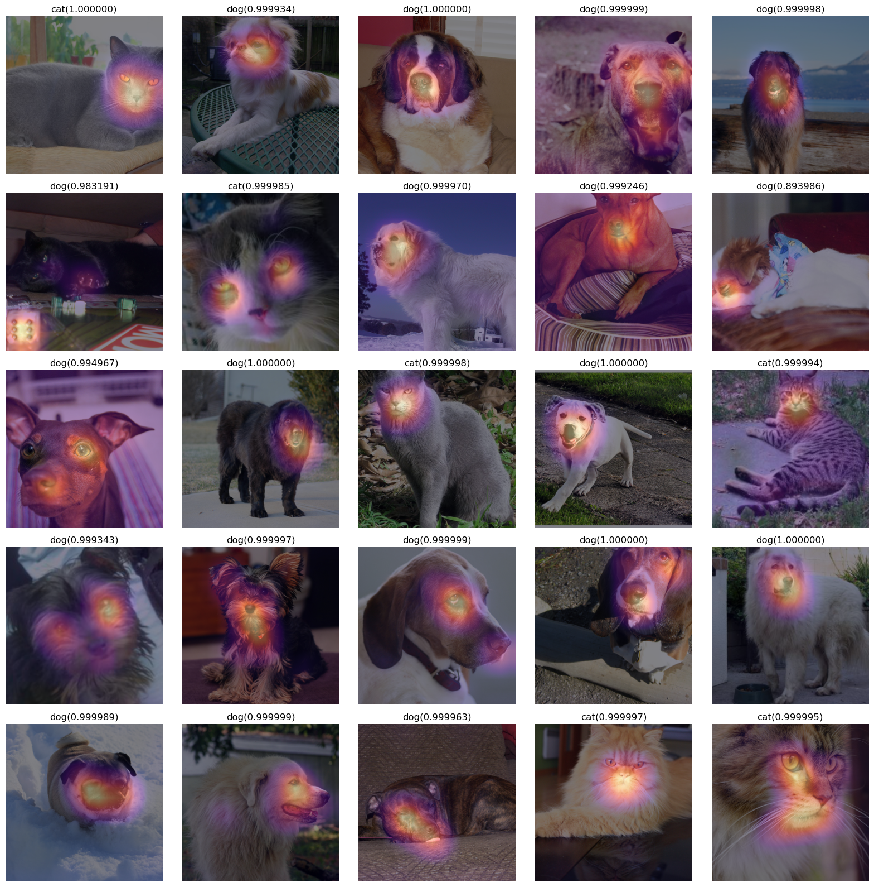
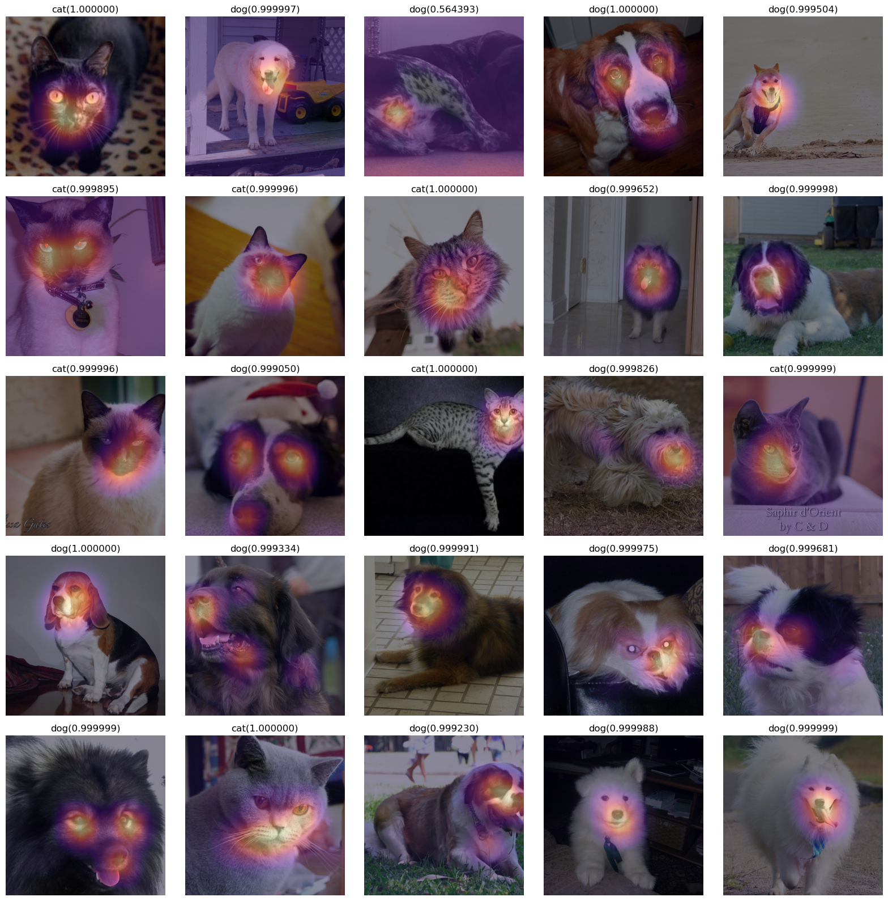
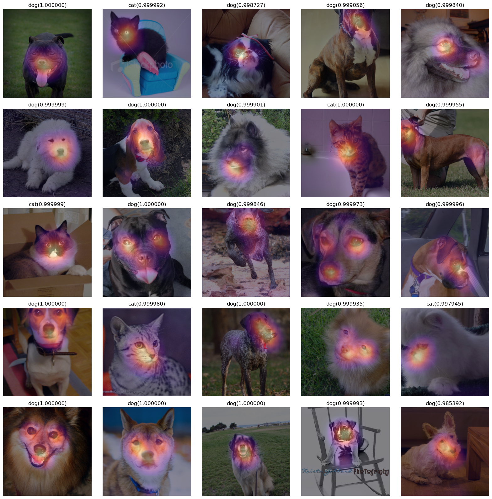

#{{<video https://youtu.be/playlist?list=PLQqh36zP38-wTzMRmZzvr2TL12DNo6jXF&si=RnG6_-uhn9Yb57nU >}}07wk-1: 합성곱신경망 (3) – XAI (Class Activation Map, CAM)
1. 강의영상
2. Imports
import torch
import torchvision
import fastai.vision3. XAI란?
https://brunch.co.kr/(hvnpoet/140?)
4. CAM의 구현을 위한 예비학습
A. Data
path = untar_data(URLs.PETS)/'images'path.ls()(#7393) [Path('/home/cgb3/.fastai/data/oxford-iiit-pet/images/boxer_177.jpg'),Path('/home/cgb3/.fastai/data/oxford-iiit-pet/images/american_pit_bull_terrier_131.jpg'),Path('/home/cgb3/.fastai/data/oxford-iiit-pet/images/keeshond_165.jpg'),Path('/home/cgb3/.fastai/data/oxford-iiit-pet/images/samoyed_80.jpg'),Path('/home/cgb3/.fastai/data/oxford-iiit-pet/images/Siamese_224.jpg'),Path('/home/cgb3/.fastai/data/oxford-iiit-pet/images/miniature_pinscher_59.jpg'),Path('/home/cgb3/.fastai/data/oxford-iiit-pet/images/saint_bernard_159.jpg'),Path('/home/cgb3/.fastai/data/oxford-iiit-pet/images/american_bulldog_143.jpg'),Path('/home/cgb3/.fastai/data/oxford-iiit-pet/images/american_pit_bull_terrier_142.jpg'),Path('/home/cgb3/.fastai/data/oxford-iiit-pet/images/english_cocker_spaniel_78.jpg')...]files= get_image_files(path)
def label_func(fname):
if fname[0].isupper():
return 'cat'
else:
return 'dog'
dls = ImageDataLoaders.from_name_func(path,files,label_func,item_tfms=Resize(512)) B. 이미지 자료 처리
- 원래 우리가 아는 방법: path를 의미하는 string \(\to\) torch.tensor
torchvision.io.read_image('/home/cgb3/.fastai/data/oxford-iiit-pet/images/staffordshire_bull_terrier_106.jpg')tensor([[[208, 207, 200, ..., 115, 111, 121],
[211, 181, 141, ..., 123, 113, 108],
[198, 174, 125, ..., 155, 132, 106],
...,
[213, 207, 195, ..., 210, 205, 208],
[216, 210, 200, ..., 219, 213, 211],
[221, 206, 193, ..., 217, 221, 222]],
[[214, 214, 209, ..., 116, 112, 122],
[218, 190, 153, ..., 121, 111, 106],
[206, 184, 137, ..., 154, 131, 105],
...,
[211, 207, 195, ..., 201, 199, 204],
[221, 215, 207, ..., 210, 207, 206],
[228, 213, 202, ..., 208, 212, 216]],
[[230, 222, 206, ..., 108, 104, 116],
[224, 187, 143, ..., 124, 114, 111],
[209, 176, 123, ..., 160, 136, 111],
...,
[222, 217, 207, ..., 202, 199, 205],
[240, 234, 225, ..., 211, 207, 210],
[246, 231, 219, ..., 209, 215, 220]]], dtype=torch.uint8)- fastai를 이용하는 방법
ximg = PILImage.create('/home/cgb3/.fastai/data/oxford-iiit-pet/images/staffordshire_bull_terrier_106.jpg')
ximg
TensorImage(ximg)TensorImage([[[208, 214, 230],
[207, 214, 222],
[200, 209, 206],
...,
[115, 116, 108],
[111, 112, 104],
[121, 122, 116]],
[[211, 218, 224],
[181, 190, 187],
[141, 153, 143],
...,
[123, 121, 124],
[113, 111, 114],
[108, 106, 111]],
[[198, 206, 209],
[174, 184, 176],
[125, 137, 123],
...,
[155, 154, 160],
[132, 131, 136],
[106, 105, 111]],
...,
[[213, 211, 222],
[207, 207, 217],
[195, 195, 207],
...,
[210, 201, 202],
[205, 199, 199],
[208, 204, 205]],
[[216, 221, 240],
[210, 215, 234],
[200, 207, 225],
...,
[219, 210, 211],
[213, 207, 207],
[211, 206, 210]],
[[221, 228, 246],
[206, 213, 231],
[193, 202, 219],
...,
[217, 208, 209],
[221, 212, 215],
[222, 216, 220]]], dtype=torch.uint8)- fastai를 이용하는 방법2:
iter(dls.test_dl([ximg])).__next__()[0]TensorImage([[[[1.8379, 1.8379, 1.8550, ..., 1.8379, 1.8379, 1.8379],
[1.8379, 1.8379, 1.8550, ..., 1.8379, 1.8379, 1.8379],
[1.8379, 1.8379, 1.8550, ..., 1.8379, 1.8379, 1.8379],
...,
[1.7009, 1.7180, 1.7352, ..., 1.7694, 1.7523, 1.7352],
[1.8379, 1.8037, 1.7694, ..., 1.7352, 1.7523, 1.7352],
[1.7523, 1.7523, 1.7352, ..., 1.7180, 1.7523, 1.7523]],
[[2.0434, 2.0434, 2.0609, ..., 2.0084, 2.0084, 2.0084],
[2.0434, 2.0434, 2.0609, ..., 2.0084, 2.0084, 2.0084],
[2.0434, 2.0434, 2.0609, ..., 2.0084, 2.0084, 2.0084],
...,
[1.8859, 1.9034, 1.9209, ..., 1.8683, 1.8333, 1.7983],
[2.0259, 1.9909, 1.9384, ..., 1.8683, 1.8508, 1.8158],
[1.9384, 1.9384, 1.8859, ..., 1.8859, 1.8683, 1.8508]],
[[2.2391, 2.2391, 2.2566, ..., 2.2566, 2.2566, 2.2566],
[2.2391, 2.2391, 2.2566, ..., 2.2566, 2.2566, 2.2566],
[2.2391, 2.2391, 2.2566, ..., 2.2566, 2.2566, 2.2566],
...,
[2.1346, 2.1520, 2.1868, ..., 2.0997, 2.0648, 2.0474],
[2.2740, 2.2566, 2.2217, ..., 2.0823, 2.0648, 2.0474],
[2.1868, 2.2043, 2.1868, ..., 2.0823, 2.0648, 2.0474]]]],
device='cuda:0')first(dls.test_dl([ximg]))[0]TensorImage([[[[1.8379, 1.8379, 1.8550, ..., 1.8379, 1.8379, 1.8379],
[1.8379, 1.8379, 1.8550, ..., 1.8379, 1.8379, 1.8379],
[1.8379, 1.8379, 1.8550, ..., 1.8379, 1.8379, 1.8379],
...,
[1.7009, 1.7180, 1.7352, ..., 1.7694, 1.7523, 1.7352],
[1.8379, 1.8037, 1.7694, ..., 1.7352, 1.7523, 1.7352],
[1.7523, 1.7523, 1.7352, ..., 1.7180, 1.7523, 1.7523]],
[[2.0434, 2.0434, 2.0609, ..., 2.0084, 2.0084, 2.0084],
[2.0434, 2.0434, 2.0609, ..., 2.0084, 2.0084, 2.0084],
[2.0434, 2.0434, 2.0609, ..., 2.0084, 2.0084, 2.0084],
...,
[1.8859, 1.9034, 1.9209, ..., 1.8683, 1.8333, 1.7983],
[2.0259, 1.9909, 1.9384, ..., 1.8683, 1.8508, 1.8158],
[1.9384, 1.9384, 1.8859, ..., 1.8859, 1.8683, 1.8508]],
[[2.2391, 2.2391, 2.2566, ..., 2.2566, 2.2566, 2.2566],
[2.2391, 2.2391, 2.2566, ..., 2.2566, 2.2566, 2.2566],
[2.2391, 2.2391, 2.2566, ..., 2.2566, 2.2566, 2.2566],
...,
[2.1346, 2.1520, 2.1868, ..., 2.0997, 2.0648, 2.0474],
[2.2740, 2.2566, 2.2217, ..., 2.0823, 2.0648, 2.0474],
[2.1868, 2.2043, 2.1868, ..., 2.0823, 2.0648, 2.0474]]]],
device='cuda:0')x.to("cpu").shapetorch.Size([1, 3, 512, 512])torch.einsum('ocij -> ijc',x.to("cpu")).shapetorch.Size([512, 512, 3])plt.imshow(torch.einsum('ocij -> ijc',x.to("cpu")))Clipping input data to the valid range for imshow with RGB data ([0..1] for floats or [0..255] for integers).
dls.decode([x])(TensorImage([[[[231, 231, 232, ..., 231, 231, 231],
[231, 231, 232, ..., 231, 231, 231],
[231, 231, 232, ..., 231, 231, 231],
...,
[223, 224, 225, ..., 227, 226, 225],
[231, 229, 227, ..., 225, 226, 225],
[226, 226, 225, ..., 224, 226, 226]],
[[233, 233, 234, ..., 231, 231, 231],
[233, 233, 234, ..., 231, 231, 231],
[233, 233, 234, ..., 231, 231, 231],
...,
[224, 225, 226, ..., 223, 221, 219],
[232, 230, 227, ..., 223, 222, 220],
[227, 227, 224, ..., 224, 223, 222]],
[[232, 232, 233, ..., 233, 233, 233],
[232, 232, 233, ..., 233, 233, 233],
[232, 232, 233, ..., 233, 233, 233],
...,
[226, 227, 229, ..., 224, 222, 221],
[234, 233, 231, ..., 223, 222, 221],
[229, 230, 229, ..., 223, 222, 221]]]]),)C. AP layer
ap = torch.nn.AdaptiveAvgPool2d(output_size=1) X = torch.arange(48).reshape(1,3,4,4)*1.0
Xtensor([[[[ 0., 1., 2., 3.],
[ 4., 5., 6., 7.],
[ 8., 9., 10., 11.],
[12., 13., 14., 15.]],
[[16., 17., 18., 19.],
[20., 21., 22., 23.],
[24., 25., 26., 27.],
[28., 29., 30., 31.]],
[[32., 33., 34., 35.],
[36., 37., 38., 39.],
[40., 41., 42., 43.],
[44., 45., 46., 47.]]]])ap(X)tensor([[[[ 7.5000]],
[[23.5000]],
[[39.5000]]]])X[0,0,...].mean(),X[0,1,...].mean(),X[0,2,...].mean()(tensor(7.5000), tensor(23.5000), tensor(39.5000))6. CAM의 구현
A. 1단계 – 이미지분류 잘하는 네트워크 선택
lrnr = vision_learner(dls,resnet34,metrics=accuracy) lrnr.fine_tune(1)| epoch | train_loss | valid_loss | accuracy | time |
|---|---|---|---|---|
| 0 | 0.178080 | 0.008618 | 0.995264 | 00:31 |
| epoch | train_loss | valid_loss | accuracy | time |
|---|---|---|---|---|
| 0 | 0.036673 | 0.007956 | 0.997970 | 00:41 |
B. 2단계– 네트워크의 끝 부분 수정
- 모형의 분해
net1= lrnr.model[0]
net2= lrnr.model[1]- net2를 좀더 살펴보자.
net2Sequential(
(0): AdaptiveConcatPool2d(
(ap): AdaptiveAvgPool2d(output_size=1)
(mp): AdaptiveMaxPool2d(output_size=1)
)
(1): fastai.layers.Flatten(full=False)
(2): BatchNorm1d(1024, eps=1e-05, momentum=0.1, affine=True, track_running_stats=True)
(3): Dropout(p=0.25, inplace=False)
(4): Linear(in_features=1024, out_features=512, bias=False)
(5): ReLU(inplace=True)
(6): BatchNorm1d(512, eps=1e-05, momentum=0.1, affine=True, track_running_stats=True)
(7): Dropout(p=0.5, inplace=False)
(8): Linear(in_features=512, out_features=2, bias=False)
)_X, _y = dls.one_batch() net1.to("cpu")
net2.to("cpu")
_X = _X.to("cpu")print(net1(_X).shape)
print(net2[0](net1(_X)).shape)
print(net2[1](net2[0](net1(_X))).shape)
print(net2[2](net2[1](net2[0](net1(_X)))).shape)torch.Size([64, 512, 16, 16])
torch.Size([64, 1024, 1, 1])
torch.Size([64, 1024])
torch.Size([64, 1024])- net2를 아래와 같이 수정하고 재학습하자 (왜?)
net2= torch.nn.Sequential(
torch.nn.AdaptiveAvgPool2d(output_size=1), # (64,512,16,16) -> (64,512,1,1)
torch.nn.Flatten(), # (64,512,1,1) -> (64,512)
torch.nn.Linear(512,2,bias=False) # (64,512) -> (64,2)
)net = torch.nn.Sequential(
net1,
net2
)lrnr2= Learner(dls,net,metrics=accuracy) # loss_fn??lrnr2.loss_func, lrnr.loss_func ## 알아서 기존의 loss function으로 잘 들어가 있음. (FlattenedLoss of CrossEntropyLoss(), FlattenedLoss of CrossEntropyLoss())lrnr2.fine_tune(5) # net2를 수정해서 accuracy가 안좋아지긴 했는데 그래도 쓸만함 | epoch | train_loss | valid_loss | accuracy | time |
|---|---|---|---|---|
| 0 | 0.240359 | 30.371140 | 0.312585 | 00:41 |
| epoch | train_loss | valid_loss | accuracy | time |
|---|---|---|---|---|
| 0 | 0.128956 | 0.307888 | 0.870771 | 00:41 |
| 1 | 0.129678 | 1.002871 | 0.734777 | 00:41 |
| 2 | 0.091930 | 0.084261 | 0.967524 | 00:41 |
| 3 | 0.045101 | 0.040737 | 0.985115 | 00:41 |
| 4 | 0.024163 | 0.035741 | 0.985792 | 00:41 |
C. 3단계– 수정된 net2에서 Linear와 AP의 순서를 바꿈
- 1개의 observation을 고정하였을 경우 출력과정 상상
ximg = PILImage.create('/home/cgb3/.fastai/data/oxford-iiit-pet/images/staffordshire_bull_terrier_106.jpg')
x = first(dls.test_dl([ximg]))[0]net2Sequential(
(0): AdaptiveAvgPool2d(output_size=1)
(1): Flatten(start_dim=1, end_dim=-1)
(2): Linear(in_features=512, out_features=2, bias=False)
)print(net1(x).shape)
print(net2[0](net1(x)).shape)
print(net2[1](net2[0](net1(x))).shape)
print(net2[2](net2[1](net2[0](net1(x)))).shape)torch.Size([1, 512, 16, 16])
torch.Size([1, 512, 1, 1])
torch.Size([1, 512])
torch.Size([1, 2])- 최종결과 확인
net(x)TensorImage([[-9.3827, 9.6644]], device='cuda:0', grad_fn=<AliasBackward0>)dls.vocab['cat', 'dog']- net(x)에서 뒤쪽의 값이 클수록 ’dog’를 의미한다.
- net2의 순서 바꾸기 전 전체 네트워크:
\[\underset{(1,3,512,512)}{\boldsymbol x} \overset{net_1}{\to} \left( \underset{(1,512,16,16)}{\tilde{\boldsymbol x}} \overset{ap}{\to} \underset{(1,512,1,1)}{{\boldsymbol \sharp}}\overset{flatten}{\to} \underset{(1,512)}{{\boldsymbol \sharp}}\overset{linear}{\to} \underset{(1,2)}{\hat{\boldsymbol y}}\right) = [-9.0358, 9.0926]\]
- 아래와 같이 순서를 바꿔서 한번 계산해보고 싶다. (왜???..)
\[\underset{(1,3,224,224)}{\boldsymbol x} \overset{net_1}{\to} \left( \underset{(1,512,16,16)}{\tilde{\boldsymbol x}} \overset{linear}{\to} \underset{(1,2,16,16)}{{\bf why}}\overset{ap}{\to} \underset{(1,2,1,1)}{{\boldsymbol \sharp}}\overset{flatten}{\to} \underset{(1,2)}{\hat{\boldsymbol y}}\right) = [−9.0358,9.0926]\]
- 여기에서 (1,512,16,16) -> (1,2,16,16) 로 가는 선형변환을 적용하는 방법? (16,16) each pixel에 대하여 (512 \(\to\) 2)로 가는 변환을 수행
- 통찰: 이 경우 특이하게도 레이어의 순서를 바꿨을때 출력이 동일함 (선형변환하고 평균내거나 평균내고 선형변환하는건 같으니까)
_x =torch.tensor([1,2,3.14,4]).reshape(4,1)
_x tensor([[1.0000],
[2.0000],
[3.1400],
[4.0000]])_l1 = torch.nn.Linear(1,1,bias=False)
_l1(_x).mean() # _x -> 선형변환 -> 평균 tensor(2.2609, grad_fn=<MeanBackward0>)_l1(_x.mean().reshape(1,1)) # _x -> 평균 -> 선형변환tensor([[2.2609]], grad_fn=<MmBackward0>)- 구현해보자.
why = torch.einsum('cb,abij->acij',net2[2].weight,net1(x))net2[0](why)TensorImage([[[[-9.3827]],
[[ 9.6644]]]], device='cuda:0', grad_fn=<AliasBackward0>)net(x)TensorImage([[-9.3827, 9.6644]], device='cuda:0', grad_fn=<AliasBackward0>)잠깐 멈추고 생각 좀 해보자..
- 이미지
ximg
- 네트워크의 결과
net2(net1(x))TensorImage([[-9.3827, 9.6644]], device='cuda:0', grad_fn=<AliasBackward0>)- -9.0358 << 9.0926 이므로 ’ximg’는 높은 확률로 개라는 뜻이다.
- 아래의네트워크를 관찰
\[\underset{(1,2,16,16)}{{\bf why}}\overset{ap}{\to} \underset{(1,2,1,1)}{{\boldsymbol \sharp}}\overset{flatten}{\to} \underset{(1,2)}{\hat{\boldsymbol y}} = [-9.0358,9.0926]\]
net2[0](why)TensorImage([[[[-9.3827]],
[[ 9.6644]]]], device='cuda:0', grad_fn=<AliasBackward0>)더 파고들어서 분석해보자.
why.shapetorch.Size([1, 2, 16, 16])(why[0,0,:,:]).mean(), (why[0,1,:,:]).mean()(TensorImage(-9.3827, device='cuda:0', grad_fn=<AliasBackward0>),
TensorImage(9.6644, device='cuda:0', grad_fn=<AliasBackward0>))why[0,0,:,:]
#collapse_output
(why[0,0,:,:]).to(torch.int64)TensorImage([[ -1, -2, -1, 0, 0, -1, -3, -6, -5, -3, -1,
-1, -2, -2, -1, -1],
[ -1, -1, 0, 0, 0, -6, -20, -28, -27, -18, -9,
-2, -1, -2, -2, -1],
[ 0, 0, 0, 0, 0, -11, -37, -62, -61, -45, -23,
-5, -1, 0, -1, -1],
[ -1, 0, 0, 0, 0, -12, -43, -83, -93, -69, -36,
-8, 0, 0, 0, 0],
[ 0, -1, -1, -1, -1, -10, -39, -86, -117, -92, -44,
-11, 0, 0, 0, 0],
[ 0, -1, -1, -1, -1, -5, -27, -69, -103, -93, -48,
-13, -1, -1, -1, -4],
[ 0, 0, 0, 0, 0, -1, -15, -44, -72, -73, -42,
-11, -1, -1, -1, -3],
[ 0, 0, 1, 0, 0, 0, -9, -30, -44, -43, -24,
-7, 0, -1, -1, -1],
[ 0, 0, 0, 0, 0, -1, -7, -20, -27, -20, -9,
-2, 0, 0, -1, -1],
[ 0, 0, -2, -5, -5, -3, -6, -12, -15, -10, -2,
0, 2, 1, -1, -1],
[ 0, 0, -8, -13, -15, -7, -4, -7, -8, -7, -2,
1, 4, 3, 0, -1],
[ 0, -1, -7, -16, -14, -8, -2, -3, -3, -5, -3,
0, 2, 2, -1, -2],
[ -2, -3, -5, -8, -8, -5, -1, -1, 0, -1, -2,
0, 0, -1, -1, -1],
[ -2, -3, -2, -2, -1, -1, 0, 0, 0, 0, 0,
0, 0, -1, -1, -2],
[ -2, -2, -2, -2, -1, 0, -1, 0, -1, -2, -1,
-1, 0, -1, -2, -2],
[ -2, -3, -3, -3, -2, -1, -1, -1, -2, -3, -2,
-1, -1, -1, -3, -3]], device='cuda:0')- 이 값들의 평균은 -9.0358 이다. (이 값이 클수록 이 그림이 고양이라는 의미 = 이 값이 작을수록 이 그림이 고양이가 아니라는 의미)
- 그런데 살펴보니 대부분의 위치에서 0에 가까운 값을 가짐. 다만 특정위치에서 엄청 큰 작은값이 있어서 -9.0358이라는 평균값이 나옴 \(\to\) 특정위치에 존재하는 엄청 작은 값들은 ximg가 고양이가 아니라고 판단하는 근거가 된다.
why[0,1,:,:]
#collapse_output
(why[0,1,:,:]).to(torch.int64)TensorImage([[ 1, 3, 1, 0, 0, 1, 4, 6, 6, 3, 1, 1, 2,
2, 1, 1],
[ 2, 1, 0, 0, 0, 6, 20, 27, 27, 18, 9, 2, 2,
2, 3, 2],
[ 0, 0, 0, 0, 0, 11, 37, 62, 60, 45, 23, 5, 1,
0, 1, 1],
[ 1, 0, 0, 0, 0, 13, 44, 83, 92, 68, 35, 8, 0,
0, 0, 0],
[ 0, 1, 1, 1, 1, 11, 41, 87, 117, 91, 43, 10, 0,
0, 0, 0],
[ 0, 1, 1, 1, 1, 6, 29, 71, 104, 94, 48, 13, 1,
1, 1, 3],
[ 1, 0, 0, 0, 0, 1, 17, 46, 74, 74, 42, 11, 1,
1, 1, 3],
[ 0, 0, 0, 0, 0, 0, 9, 31, 45, 44, 25, 7, 0,
2, 1, 1],
[ 0, 0, 0, 0, 0, 1, 7, 21, 28, 21, 10, 2, 0,
1, 1, 1],
[ 0, 0, 2, 5, 5, 3, 7, 13, 16, 10, 2, 0, -1,
-1, 1, 1],
[ 0, 0, 8, 13, 15, 7, 4, 7, 9, 7, 2, 0, -4,
-3, 1, 2],
[ 0, 1, 7, 16, 14, 7, 2, 3, 4, 5, 3, 0, -2,
-2, 2, 3],
[ 2, 3, 5, 8, 8, 5, 1, 1, 0, 1, 2, 0, 0,
1, 2, 2],
[ 1, 3, 2, 2, 2, 1, 1, 0, 0, 0, 0, 0, 0,
2, 2, 2],
[ 3, 3, 3, 2, 1, 0, 1, 1, 1, 2, 1, 1, 1,
2, 3, 3],
[ 3, 4, 4, 4, 3, 1, 2, 1, 3, 5, 3, 1, 1,
2, 4, 4]], device='cuda:0')- 이 값들의 평균은 9.0926 이다. (이 값이 클수록 이 그림이 강아지라는 의미)
- 그런데 살펴보니 대부분의 위치에서 0에 가까운 값을 가짐. 다만 특정위치에서 엄청 큰 값들이 있어서 9.0926이라는 평균값이 나옴 \(\to\) 특정위치에 존재하는 엄청 큰 값들은 결국 ximg를 강아지라고 판단하는 근거가 된다.
- 시각화
why_cat = why[0,0,:,:]
why_dog = why[0,1,:,:]fig, ax = plt.subplots(1,3,figsize=(8,4))
ax[0].imshow(torch.einsum('ocij -> ijc',dls.decode((x,))[0]).to("cpu"))
ax[1].imshow(why_cat.to("cpu").detach(),cmap='magma')
ax[2].imshow(why_dog.to("cpu").detach(),cmap='magma')
- magma = 검은색 < 보라색 < 빨간색 < 노란색
- 왼쪽그림의 검은 부분은 고양이가 아니라는 근거, 오른쪽그림의 노란부분은 강아지라는 근거
- why_cat, why_dog를 (16,16) \(\to\) (512,512) 로 resize
fig, ax = plt.subplots(1,3,figsize=(8,4))
ax[0].imshow(torch.einsum('ocij -> ijc',dls.decode((x,))[0]).to("cpu"))
ax[1].imshow(why_cat.to("cpu").detach(),cmap='magma',extent=(0,511,511,0),interpolation='bilinear')
ax[2].imshow(why_dog.to("cpu").detach(),cmap='magma',extent=(0,511,511,0),interpolation='bilinear')
- 겹쳐그리기
fig, ax = plt.subplots(1,2,figsize=(8,4))
ax[0].imshow(torch.einsum('ocij -> ijc',dls.decode((x,))[0]).to("cpu"))
ax[0].imshow(why_cat.to("cpu").detach(),cmap='magma',extent=(0,511,511,0),interpolation='bilinear',alpha=0.5)
ax[1].imshow(torch.einsum('ocij -> ijc',dls.decode((x,))[0]).to("cpu"))
ax[1].imshow(why_dog.to("cpu").detach(),cmap='magma',extent=(0,511,511,0),interpolation='bilinear',alpha=0.5)
- 하니이미지 시각화
import requestsximg= PILImage.create(requests.get('https://github.com/guebin/DL2022/blob/main/posts/I.%20Overview/2022-09-06-hani01.jpeg?raw=true').content)
x= first(dls.test_dl([ximg]))[0]x.shapetorch.Size([1, 3, 512, 512])#plt.imshow(torch.einsum('ocij -> ijc',x.to("cpu")))why = torch.einsum('cb,abij->acij',net2[2].weight,net1(x))
why_cat = why[0,0,:,:]
why_dog = why[0,1,:,:]fig, ax = plt.subplots(1,2,figsize=(8,4))
ax[0].imshow(torch.einsum('ocij -> ijc',dls.decode((x,))[0]).to("cpu"))
ax[0].imshow(why_cat.to("cpu").detach(),cmap='magma',extent=(0,511,511,0),interpolation='bilinear',alpha=0.5)
ax[1].imshow(torch.einsum('ocij -> ijc',dls.decode((x,))[0]).to("cpu"))
ax[1].imshow(why_dog.to("cpu").detach(),cmap='magma',extent=(0,511,511,0),interpolation='bilinear',alpha=0.5)
- 하니이미지 시각화 with prob
sftmax=torch.nn.Softmax(dim=1)sftmax(net(x))TensorImage([[2.8841e-05, 9.9997e-01]], device='cuda:0',
grad_fn=<AliasBackward0>)catprob, dogprob = sftmax(net(x))[0,0].item(), sftmax(net(x))[0,1].item()fig, ax = plt.subplots(1,2,figsize=(8,4))
ax[0].imshow(torch.einsum('ocij -> ijc',dls.decode((x,))[0]).to("cpu"))
ax[0].imshow(why_cat.to("cpu").detach(),cmap='magma',extent=(0,511,511,0),interpolation='bilinear',alpha=0.5)
ax[0].set_title(f'catprob= {catprob:.6f}')
ax[1].imshow(torch.einsum('ocij -> ijc',dls.decode((x,))[0]).to("cpu"))
ax[1].imshow(why_dog.to("cpu").detach(),cmap='magma',extent=(0,511,511,0),interpolation='bilinear',alpha=0.5)
ax[1].set_title(f'dogprob={dogprob:.6f}')Text(0.5, 1.0, 'dogprob=0.999971')
D. 4단계 – CAM 시각화
sftmax = torch.nn.Softmax(dim=1)fig, ax = plt.subplots(5,5)
k=0
for i in range(5):
for j in range(5):
x, = first(dls.test_dl([PILImage.create(get_image_files(path)[k])]))
why = torch.einsum('cb,abij -> acij', net2[2].weight, net1(x))
why_cat = why[0,0,:,:]
why_dog = why[0,1,:,:]
catprob, dogprob = sftmax(net(x))[0][0].item(), sftmax(net(x))[0][1].item()
if catprob>dogprob:
dls.train.decode((x,))[0].squeeze().show(ax=ax[i][j])
ax[i][j].imshow(why_cat.to("cpu").detach(),alpha=0.5,extent=(0,511,511,0),interpolation='bilinear',cmap='magma')
ax[i][j].set_title("cat(%2f)" % catprob)
else:
dls.train.decode((x,))[0].squeeze().show(ax=ax[i][j])
ax[i][j].imshow(why_dog.to("cpu").detach(),alpha=0.5,extent=(0,511,511,0),interpolation='bilinear',cmap='magma')
ax[i][j].set_title("dog(%2f)" % dogprob)
k=k+1
fig.set_figwidth(16)
fig.set_figheight(16)
fig.tight_layout()
fig, ax = plt.subplots(5,5)
k=25
for i in range(5):
for j in range(5):
x, = first(dls.test_dl([PILImage.create(get_image_files(path)[k])]))
why = torch.einsum('cb,abij -> acij', net2[2].weight, net1(x))
why_cat = why[0,0,:,:]
why_dog = why[0,1,:,:]
catprob, dogprob = sftmax(net(x))[0][0].item(), sftmax(net(x))[0][1].item()
if catprob>dogprob:
dls.train.decode((x,))[0].squeeze().show(ax=ax[i][j])
ax[i][j].imshow(why_cat.to("cpu").detach(),alpha=0.5,extent=(0,511,511,0),interpolation='bilinear',cmap='magma')
ax[i][j].set_title("cat(%2f)" % catprob)
else:
dls.train.decode((x,))[0].squeeze().show(ax=ax[i][j])
ax[i][j].imshow(why_dog.to("cpu").detach(),alpha=0.5,extent=(0,511,511,0),interpolation='bilinear',cmap='magma')
ax[i][j].set_title("dog(%2f)" % dogprob)
k=k+1
fig.set_figwidth(16)
fig.set_figheight(16)
fig.tight_layout()
fig, ax = plt.subplots(5,5)
k=50
for i in range(5):
for j in range(5):
x, = first(dls.test_dl([PILImage.create(get_image_files(path)[k])]))
why = torch.einsum('cb,abij -> acij', net2[2].weight, net1(x))
why_cat = why[0,0,:,:]
why_dog = why[0,1,:,:]
catprob, dogprob = sftmax(net(x))[0][0].item(), sftmax(net(x))[0][1].item()
if catprob>dogprob:
dls.train.decode((x,))[0].squeeze().show(ax=ax[i][j])
ax[i][j].imshow(why_cat.to("cpu").detach(),alpha=0.5,extent=(0,511,511,0),interpolation='bilinear',cmap='magma')
ax[i][j].set_title("cat(%2f)" % catprob)
else:
dls.train.decode((x,))[0].squeeze().show(ax=ax[i][j])
ax[i][j].imshow(why_dog.to("cpu").detach(),alpha=0.5,extent=(0,511,511,0),interpolation='bilinear',cmap='magma')
ax[i][j].set_title("dog(%2f)" % dogprob)
k=k+1
fig.set_figwidth(16)
fig.set_figheight(16)
fig.tight_layout()
fig, ax = plt.subplots(5,5)
k=75
for i in range(5):
for j in range(5):
x, = first(dls.test_dl([PILImage.create(get_image_files(path)[k])]))
why = torch.einsum('cb,abij -> acij', net2[2].weight, net1(x))
why_cat = why[0,0,:,:]
why_dog = why[0,1,:,:]
catprob, dogprob = sftmax(net(x))[0][0].item(), sftmax(net(x))[0][1].item()
if catprob>dogprob:
dls.train.decode((x,))[0].squeeze().show(ax=ax[i][j])
ax[i][j].imshow(why_cat.to("cpu").detach(),alpha=0.5,extent=(0,511,511,0),interpolation='bilinear',cmap='magma')
ax[i][j].set_title("cat(%2f)" % catprob)
else:
dls.train.decode((x,))[0].squeeze().show(ax=ax[i][j])
ax[i][j].imshow(why_dog.to("cpu").detach(),alpha=0.5,extent=(0,511,511,0),interpolation='bilinear',cmap='magma')
ax[i][j].set_title("dog(%2f)" % dogprob)
k=k+1
fig.set_figwidth(16)
fig.set_figheight(16)
fig.tight_layout()